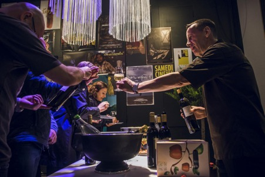

Inauguré en début d’année, le FFPA Club, formule de soutien s’adressant aux entreprises ou aux particuliers, sera présidé par Thierry Romanens. Personnalité dans le domaine du cinéma d’auteur et ami des soirées découvertes organisées par l’association des Films de Plein Air, le patron de Radio Nord-Sud s’est dit heureux de pouvoir présider cette nouvelle initiative :
Le Festival des Films de Plein Air (FFPA) porte haut les couleurs de notre ville et du cinéma. Il est synonyme de tolérance et de rapprochement. Il nous apporte la connaissance, nous inscrit dans un processus d’ouverture au monde et se rapproche des valeurs fondamentales de notre ville. En soutenant le FFPA, en lui offrant l’opportunité de poursuivre ce rêve, de le rendre toujours plus séduisant année après année, c’est tout Paris qui rayonne, bien au-delà de ses frontières

Avec le FFPA Club, le Festival espère toucher plus de soutiens privés en proposant à ses membres de vivre la manifestation de l’intérieur avec des avantages et des évènements exclusifs. A ce jour, le FFPA dépend largement de fonds publics et souhaiterait équilibrer les parts de financements. Une mesure qui vise, comme l’indique la présidente de l’association du FFPA, Madame Jennifer Viala, à ce que les Parisiens s’approprient le Festival, l’invitant à devenir un évènement incontournable de l’année culturelle de la cité, avec un impact régional et national. Cela passe, entre autres, par le renforcement des contributions du secteur privé
La première édition du FFPA aura lieu du 5 au 8 août 2017 L’évènement s’inscrira désormais chaque année à la mi-été.